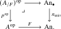
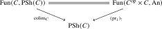
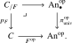
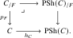
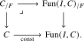
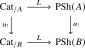
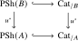
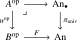
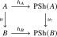
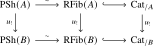

The Yoneda lemma describes morphisms out of a single representable presheaf. Density gives the complementary global statement: every presheaf is canonically a colimit of representable ones, indexed by its category of elements. This presentation will be the main input for the free-cocompletion property below and the pointwise Kan-extension formulas of the next chapter.
12.6.1 Colimits through categories of elements
Consider a small category \(A\) and consider a functor \(F\colon A\catop \to \An\), corresponding to a cocartesian fibration \(E \to A\catop\). We write \(A_{/F} := E\catop\), so that we may write \(E\) as \((A_{/F})\catop\):

The functor \(p_!\colon \PSh(A_{/F}) \to \PSh(A)\) sends the terminal functor \(e\) to \(F\), hence we have \[ \colim_{A\catop} F = \colim_{A\catop} p_!(e) \simeq \colim_{(A_{/F})\catop} e. \]
To compute this, we must factor the map \((A_{/F})\catop \to e\) into an initial functor and a left fibration: Thus \[ \colim_{A\catop}F \simeq \Pi_{\infty}((A_{/F})\catop) \simeq \Pi_{\infty}(A_{/F}), \] where the second isomorphism is Corollary 12.2.6.
Corollary 12.6.1. Let \(F\colon A\catop \to \An\) be a representable functor. Then \(\colim_{A\catop}F\) is contractible.
Proof
We have \(\colim_{A\catop} F = \Pi_{\infty}(A_{/F})\). But since \(F\) is representable, the category \(A_{/F}\) admits a terminal object, meaning that there is a terminal functor \(* \to A_{/F}\). By the dual of Example 9.5.4, this implies that \(\Pi_{\infty}(A_{/F})\) is contractible.
12.6.2 Yoneda density
The preceding computation gives the colimit of an anima-valued presheaf as an object of \(\An\). We now consider a different colimit, taken in the presheaf category itself. For a presheaf \(F\colon C\catop\to\An\), each object \((x,s)\) of \(C_{/F}\) gives a morphism \(h_C(x)\to F\) by the Yoneda lemma. We will show that this cocone exhibits \(F\) as the colimit of these representable presheaves.
Let \(\pi_{\univ}\colon\Cat_{\bullet}\to\Cat\) be a directed univalent cocartesian fibration defining a universe of small categories with corresponding universe of small animae \(\An\).
Remark 12.6.2. Recall that, for any small category \(C\), the presheaf category \(\PSh(C)\) admits all small colimits: given a small category \(I\), the colimit functor \[ \colim_I\colon \Fun(I,\PSh(C)) \to \PSh(C) \] may be described as follows: given the projection \(\pr_2\colon I \times C\catop \to C\catop\), it is given by \[ \Fun(I,\PSh(C)) \simeq \Fun(I \times C\catop, \An) \xrightarrow{(\pr_2)_!} \PSh(C). \]
A fundamental computation of colimits in a presheaf category is the following one.
Theorem 12.6.3. Let \(C\) be a small category. Then the colimit of the Yoneda embedding \[ h_C\colon C \to \PSh(C) \] is the terminal object.
Proof
Under the equivalence \(\Fun(C,\PSh(C)) \simeq \Fun(C\catop\times C,\An)\), pulling back along the projection \(\pr_1\colon C\catop\times C\to C\catop\)
\[
\pr^*_1\colon\PSh(C)\to\Fun(C\catop\times C,\An)
\]
corresponds to the functor producing \(C\)-indexed constant objects
\[
\PSh(C)\to\Fun(C,\PSh(C))\, .
\]
Passing to left adjoint functors we thus see that there is a canonical commutative triangle
of the form

Corollary 12.6.4 (Yoneda density). Let \(C\) be a small category and let \(F\colon C\catop \to \An\) be a functor corresponding to a right fibration \(p_F\):

Proof
The functor \(p_F\colon C_{/F} \to C\) induces an adjunction \[ (p_F)_!\colon \PSh(C_{/F}) \rightleftarrows \PSh(C) \noloc p_F^*. \] By Theorem 12.6.3 the colimit \(\colim_{(x,s) \in C_{/F}} h_{C_{/F}}(x,s)\) is a terminal object \(e_{C_{/F}}\) in \(\PSh(C_{/F})\), hence it follows that \begin{align*} \colim_{(x,s) \in C_{/F}} h_C(x) &\simeq \colim(h_C \circ p_F) \simeq \colim((p_F)_!h_{C_{/F}})\\ &\simeq (p_F)_!(\colim h_{C_{/F}}) \simeq (p_F)_!(e_{C_{/F}}). \end{align*} So it remains to show that there exists a canonical isomorphism \((p_F)_!(e_{C_{/F}}) \iso F\). To see this, consider the diagram The bottom functor is the one corresponding to \(e_{C_{/F}}\colon C_{/F}\catop \to \An\), hence its associated right fibration is the identity functor on \(C_{/F}\). The left Kan extension is obtained by factoring its composite with \(p_F\) into a terminal functor followed by a right fibration. Since \(p_F\) is already a right fibration, this factorization is Hence the functor \((p_F)_!(e_{C_{/F}})\colon C\catop \to \An\) is the functor classifying the right fibration \(p_F\colon C_{/F} \to C\), which is \(F\).
Remark 12.6.5. The reason for the notation \(C_{/F}\) in the previous statement is that the category \(C_{/F}\) fits into a pullback square of the following form:

Remark 12.6.6. Let \(I\) and \(C\) be categories, and let \(F\colon I \to C\) be a functor. Assume that \(\lim_I F\) exists in \(C\). Then \(\const_{\lim_I F}\) is the limit of \(F\) relative to the constant-diagram functor \(C\to\Fun(I,C)\). If \(\nu\colon \const_{\lim_I F} \to F\) denotes the universal cone, then the pair \((\lim_IF, \nu)\) is a terminal object of \(C_{/F}\):

12.6.3 Right fibrations and density
Proposition 12.6.7. Let \(A\) be a small category. The full embedding \[ \PSh(A)=\RFib(A)\hookrightarrow\Cat_{/A} \] has a left adjoint \(L\) sending each functor \(u\colon X\to A\) to the colimit of the functor \[ X\overset{u}{\to}A\overset{h_A}{\to}\PSh(A)\, . \]
Proof
Let \(F\colon A\catop\to\An\) be a presheaf with corresponding right fibration \(p_F\colon A_{/F}\to A\). If \(e\) denotes the constant presheaf on \(X\) with value the terminal object of \(\An\), we see that \begin{align*} \Hom_{\Cat_{/A}}((X,u),(A_{/F},p_F)) &\simeq \Hom_{\Cat_{/X}}((X,\id_X),(X\times_A A_{/F},\pr_{1}))\\ &\simeq \Hom_{\RFib(X)}((X,\id_X),(X\times_A A_{/F},\pr_{1}))\\ &\simeq \Hom(e,u^*(F))\\ &\simeq \Hom(u_!(e),F)\, . \end{align*} It suffices to check that \(u_!(e)\) is the colimit of the composition of the Yoneda embedding \(h_A\) with the functor \(u\). By virtue of Theorem 12.6.3, the colimit of the Yoneda embedding of \(X\) is \(e\). Since \(u_!\) commutes with colimits, and since \(u_!\circ h_X=h_A\circ u\), this proves that \[ \Hom_{\Cat_{/A}}((X,u),(A_{/F},p_F))=\Hom(\colim_{x : X}h_A(u(x))),F) \] holds functorially in \(F\). We conclude by applying Theorem 12.3.20 to the embedding of the category \(\PSh(A)\catop\) into \((\Cat_{/A})\catop\).
Remark 12.6.8. The left adjoint of the proposition above is natural with respect to functors \(u_!\).
In other words, for any functor between small categories
\[
u\colon A\to B
\]
there is a canonical commutative square
 
Proposition 12.6.9. Let \(u\colon A\to B\) be a right fibration between small categories, corresponding
to a presheaf \(F\colon B\catop\to\An\).
 
Proof
We observe that the functor \(u_!\colon\Cat_{/A}\to\Cat_{/B}\) sends the full subcategory \(\RFib(A)\) to \(\RFib(B)\). The composite
\[
\RFib(B)\hookrightarrow\Cat_{/B}\overset{L}{\to}\RFib(B)
\]
is the identity, this means that there is the canonical commutative diagram below.
